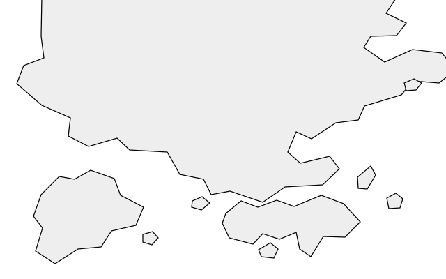

新界 九龍 香港島 維多利亞港地方誌 / 01
沿着地方，讀故事
三則公開資料示例，從檔案、地方研究和街坊口述出發。
關於尋聖
地方由記憶留下來
尋聖之旅是香港中文大學 GEYS4010 的小組計劃，關注香港較少被看見的地方文化。這項非宗教計劃以檔案和社區記憶互相參照，記下資料的出處與仍待核實的細節。
示例只供閱讀。實地導賞、拍攝及公開位置須先與相關社區和場地管理者商議。
社區參與
留下一條故事線索
一段回憶、一張有權分享的舊相片，或一份可以查閱的資料，都可以成為故事的起點。請先略去個人資料及不宜公開的位置。
原型暫未開放收件。你可以下載空白模板，在自己的裝置上整理草稿。
下載草稿模板